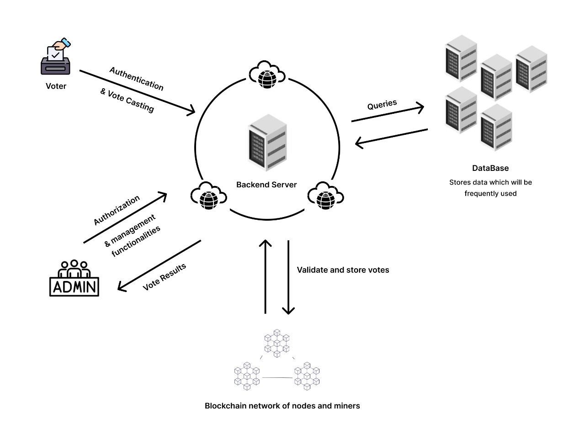

Vote.io
A Brief Overview
At the heart of democracy is the principle that every voice matters. Yet, the trust in the voting process - a pillar of democratic engagement - faces modern challenges. Vote.io leverages technology to reaffirm this trust.
Electronic Voting Machines (EVMs) have expedited the voting process in countries like India, but not without concerns. The fear of tampering and the need for transparency persists.
Vote.io introduces blockchain into the electoral equation. Immutable. Secure. Transparent. Our blockchain-based voting system redefines electoral integrity, making every vote indisputably count.
Democracy thrives when voting is secure, transparent, and indisputable. Vote.io is on a mission to fortify the voting process against fraud and discrepancies with the power of blockchain technology.
Objectives:
- Develop a full-fledged voting system anchored in blockchain.
- Guarantee a tampering-resistant architecture for the accurate counting and secure storage of votes.
Scope:
- Enhance existing electoral systems with robust security measures, significantly reducing vulnerabilities.
- Minimize the risks of electoral fraud by preventing duplicate voting instances.
Modules Description
Vote.io is engineered to transform the voting experience through a seamless integration of cutting-edge technologies. At its core, the system is a synergistic blend of four distinct modules, each a pillar in the structure of this innovative electoral solution.
The user journey begins with the Verification Module, a dual-layered mechanism combining frontend and backend processes for user authentication via phone number verification and OTP validation. The OTP, secured and managed by the OTP Generation Module, is dynamically produced and verified, ensuring user legitimacy with utmost precision.
Central to Vote.io's integrity is the Smart Contract Module deployed on the Ethereum network. It is the bedrock of the voting process, recording each new poll and user's participation with immutability and transparency, while maintaining the sanctity of every single vote through the immutable ledger of blockchain.
Completing the ecosystem is the database architecture, a robust tandem of MongoDB and Redis, ensuring data persistence and swift retrieval, serving as the backbone for the entire operation. This intricate mesh of modules operates in perfect concert, delivering a RESTful communication flow that epitomizes the next generation of voting systems.
Rationale
Flexibility
Vote.io offers an accessible, user-centric interface combined with the solidity of blockchain technology, making it a pinnacle of digital electoral systems. It's designed for adaptability and ease, ensuring all users, regardless of technical expertise, can navigate the voting process with confidence and autonomy.
The Trust Crisis in Voting
Amidst growing skepticism about the integrity of electronic voting systems, Vote.io stands as a beacon of trust, utilizing the immutable nature of blockchain to establish a verifiable and secure voting environment. In an era where the sanctity of the vote is questioned, Vote.io restores faith in the electoral process.
Evolution in Electoral Technology
As technology evolves, so does the potential for improved governance. Vote.io harnesses advancements in blockchain and smart contract technology to enhance electoral transparency and security. Our system is designed to evolve, continually integrating new innovations to better serve the democratic process.
Electoral Inclusivity
Vote.io is rooted in the principle of inclusivity, recognizing the critical importance of every vote. Our platform is crafted to be accessible to all eligible voters, aiming to eliminate barriers to voting and ensuring that every voice can be heard in the shaping of our society.
Architecture Diagram

Screenshots

Simple Layout For Easy Access